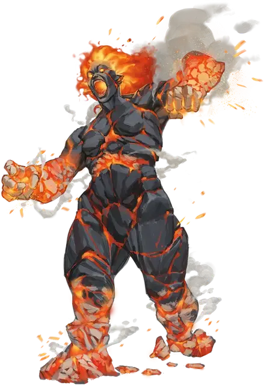

Пепельный скиталец
Cinder Hulk
Большой Элементаль, обычно хаотично-злой

Класс Доспеха 16 (природный доспех)
Хиты 84 (8к10 + 40)
Скорость 40 футов
| мод | спас | ||
|---|---|---|---|
| СИЛ | 20 | +5 | +5 |
| ЛОВ | 12 | +1 | +4 |
| ТЕЛ | 20 | +5 | +8 |
| мод | спас | ||
|---|---|---|---|
| ИНТ | 9 | −1 | −1 |
| МДР | 14 | +2 | +5 |
| ХАР | 10 | +0 | +0 |
Навыки Восприятие +5
Иммунитет к урону огонь, яд
Иммунитет к состояниям истощение, отравление
Чувства пассивное Восприятие 15
Языки Великаний, Игнан
Опасность 7 (2900 опыта)
Бонус мастерства +3
Особенности
Предсмертная вспышка. Когда пепельный скиталец умирает, он оставляет после себя облако пепла и дыма, которое заполняет сферу радиусом 10 футов с центром в его пространстве. Сфера это сильно заслонённая область. Любое существо, которое перемещается в эту область впервые за ход или начинает свой ход в ней, должно преуспеть в спасброске Телосложения Сл 16 или получит 10 (3к6) урона огнём. Облако держится 1 минуту или пока его не рассеет сильный ветер.
Действия
Мультиатака. Пепельный скиталец совершает два Размашистых удара.
Размашистый удар. Рукопашная атака оружием: +8 к попаданию, досягаемость 5 футов, одна цель. Попадание: 16 (2к10 + 5) дробящего урона плюс 10 (3к6) урона огнём.
Волна пепла (Перезарядка 5–6). Пепельный скиталец испускает волну тлеющего пепла со своего лица, рук или груди в виде 30-футового конуса. Каждое существо в этой области должно совершить спасбросок Ловкости Сл 16. В случае провала существо получает 31 (7к8) урона огнём и становится ослеплённым до конца своего следующего хода. В случае успеха существо получает только половину урона.
Описание
Пепельные скитальцы — далекие потомки огненных великанов, которые изолировали себя от мира и погрузились в энергию Планов Стихий. За прошедшие столетия эти великаны превратились в Элементалей, сделанных из дыма и пепла. Вполовину меньше своих предков-великанов, пепельные скитальцы сохраняют базовую физическую форму огненных великанов, но пепел и угли клубятся вокруг их едва сплочённых физических форм.
Пепельные скитальцы живут в изолированных анклавах в огненных местах на Материальном Плане, на Стихийных Планах Воздуха и Огня и особенно в Великом Пожарище, пограничном регионе между этими двумя планами. Они не сохранили ни навыков, ни мотивации своих великаньих предков; они просто хотят гореть столько, сколько могут, пока их собственное пламя не погаснет. Когда пепельный скиталец умирает, он превращается в клубящееся облако обжигающего дыма.